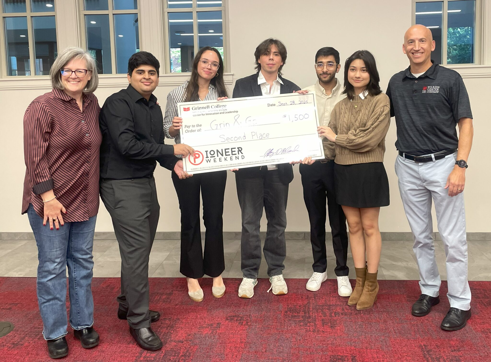
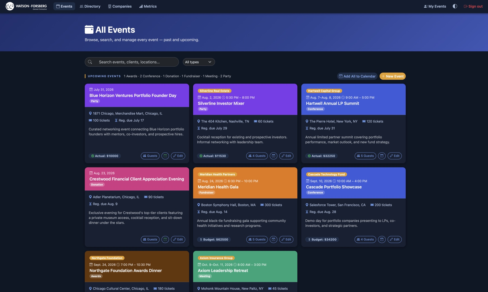
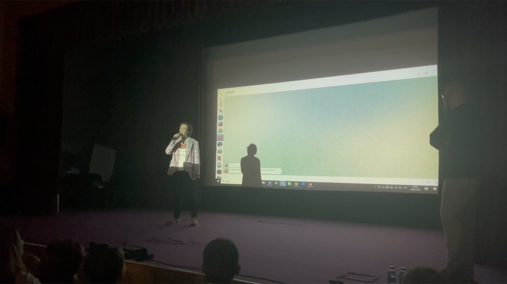

Longer write-ups of the work behind the resume — the reasoning, the numbers, and the parts I got
wrong. A résumé line is a claim; this is the working.
Pioneer Weekend · Second of 11 teams
Grin & Go
48 hours · a team of five · a campus vending business, modeled to the dollar

Grin & Go, second of 11 teams at Grinnell's Pioneer Weekend, September 2025.
Pioneer Weekend is Grinnell's entrepreneurial contest: idea to pitch in 48 hours, eleven teams. Ours picked
food. Students at Grinnell miss meals — not for lack of money, but because dining halls close and classes don't
move. We surveyed about 3% of the student body: 68.6% said they were often or always hungry between classes or
working late, 67.5% said they missed meals for lack of time, and 83.7% said they'd use a service that fixed it.
Our answer was Grin & Go: refrigerated smart vending machines placed around campus, stocked with real food,
open at 2 a.m. I owned two things — the money and the staging.
The money
Every number had to come from somewhere a judge could check. Machines were Genius Vend AI combo units at $4,699,
rounded to $5,000 to cover shipping and install. Labor used Grinnell's flat $13.77/hour student wage and an
industry maintenance benchmark of three hours per machine per week, plus two for stocking — five hours a machine,
ten workers over a 30-week year, $20,655. On the demand side, 1,700 students spending $30 a month across the
eight-month school year is $408,000 of potential revenue.
40.4%of expected spending to break even (~650 students)
$110kprojected annual profit if the survey held
2 / 11teams — recognized by President Anne Harris
The staging
I split the launch into three stages so each one paid for the next, and no stage bet money we hadn't already
made.
Stage
Spend
What it proves
1 · One machine
$5,000
Does the hardware work and do students use it? Stocked only with meal boxes the campus grill already
makes — so food cost is zero and no existing sale is lost.
2 · Eight machines
$40,000
A student-run organization: ~$240,000 of revenue, $60,000 of profit, and ten campus jobs. Now it's a
business.
3 · Local restaurants
From profit
Local restaurants supply meals; we add margin and give them the campus market. No new machines.
Anything unsold after five days goes to a local food bank — the same model campus dining already uses.
We came second. Here's why
A real-time gym-occupancy app beat us. One judge was a former athlete and pushed hard for it — but that isn't
the real reason, and I only saw the real reason afterward. Their product scaled beyond one campus; ours did not.
Grin & Go worked because it sat on Grinnell's own dining infrastructure — that's what made food cost
zero in stage one and killed the cannibalization objection. The same thing capped it at one campus. I'd built a
model that was hard to argue with and impossible to grow, and I never asked what it was worth at ten colleges.
What I took from it
A model can be internally airtight and still answer the wrong question. The judges asked what mine couldn't:
how big does this get? I'd optimized for defensible over scalable. Now I ask the size-of-the-prize question
first.
Summer 2026 · a real client, a real mess, and a rebuild under live data
In summer 2026 I was a technology consulting intern placed with Watson-Forsberg, a Minneapolis construction firm of
about twenty people. They ran company events off a single Excel spreadsheet made three years earlier. By the time
I saw it, it had no structure and no consistent format left — and most of what mattered wasn't in it at all. It
was in the VP's head.
My job was to replace it with something the whole firm could use. Rather than work from a spec, I gathered
requirements from the staff themselves, then built it in Django: budget projections, Google Maps, and links into
Unanet, Procore, and the firm's Microsoft systems, so it sat inside the tools they already used instead of beside
them.

The dashboard that replaced the spreadsheet — every event, budget, and guest list in one view.
$40kof event budget managed
50+events · 300+ contacts
178companies in the directory
The part worth telling
I assumed an event was one day in one timezone. It is not. Watson-Forsberg runs multi-day events, and events
across timezones — and I found this out after the firm was already using the app. So I rebuilt the entire
datetime layer underneath live production data, with people depending on it and their records already in it.
What I took from it
I got the model of the business wrong at the start, and the cost of fixing it went up every day the app was in
use. Twenty more minutes asking about edge cases at the requirements stage would have saved the rebuild. So now
I ask what the exceptions look like before I ask what the normal case looks like.
It's still in production at Watson-Forsberg, run by the whole firm. It replaced the spreadsheet outright — the
closest thing I own to a consulting case with an answer at the end of it.
Three weeks of transformers, one old laptop, and a country that blocked the tools
Early 2023. I wanted to fine-tune a language model to imitate how my friends text. I had no course and no mentor,
so I read until I understood how transformers actually work — about three weeks of it — exported years of
group-chat messages, cleaned them, and fine-tuned a GPT model on the result.
The harder problem was compute. The only machine I had was an old laptop, and the usual cloud training services
were closed to me where I lived. Rather than treat that as the end of the project, I engineered my own way to the
compute I needed and trained the model anyway.
What I took from it
Three things had to happen at once — learn hard material fast and unassigned, work around a hardware and access
wall, and finish with something real. The through-line is the one I keep coming back to: don't accept a dead
end as the end.
I presented the work at an AI conference during a summer program in Moscow Oblast. That talk led directly to the
product internship at Tinkoff Bank — which is how a weekend curiosity became the first line of a career.

Presenting the fine-tuned model on stage, summer 2023.